手写原图
手写部分1 / 1.jpg
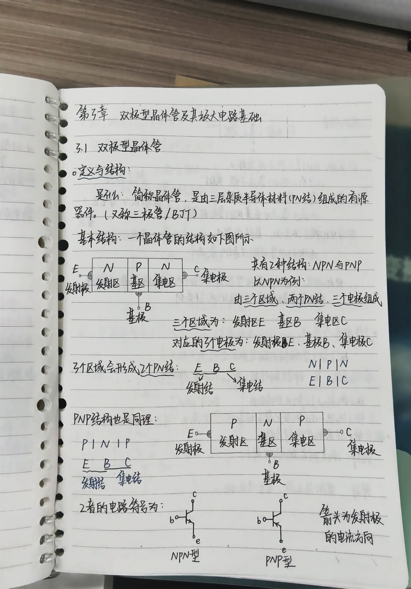
手写部分1 / 2.jpg
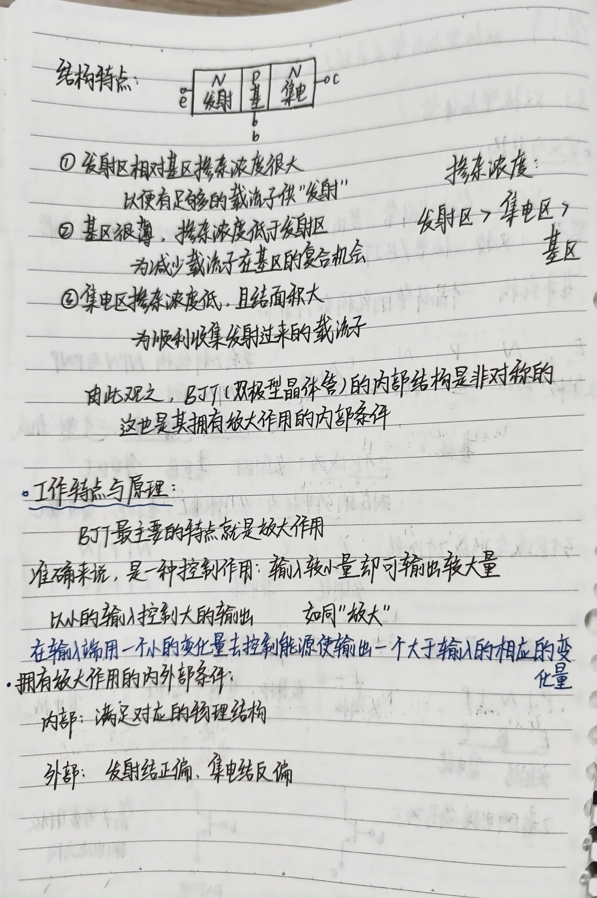
手写部分1 / 3.jpg

手写部分1 / 4.jpg

手写部分1 / 5.jpg
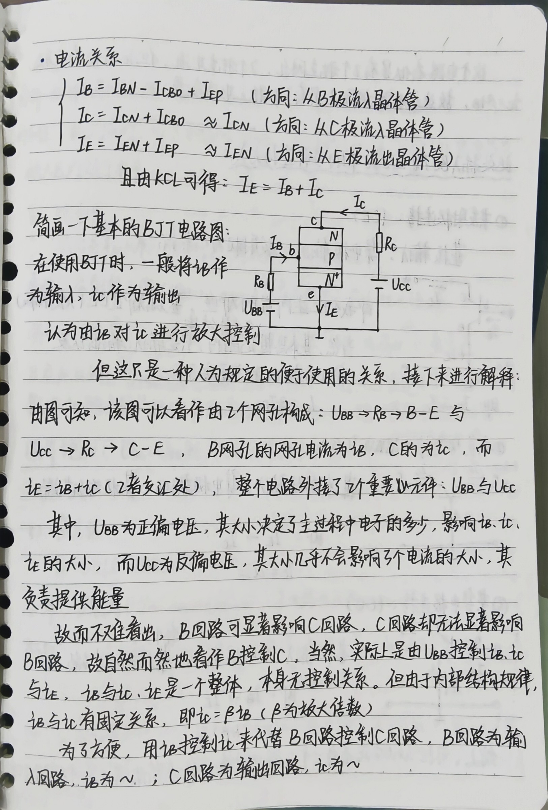
手写部分1 / 6.jpg
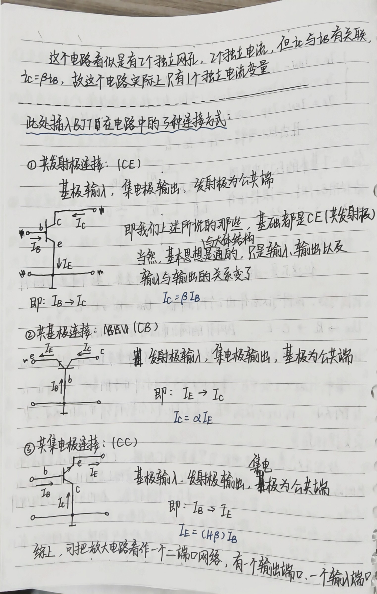
手写部分1 / 7.jpg
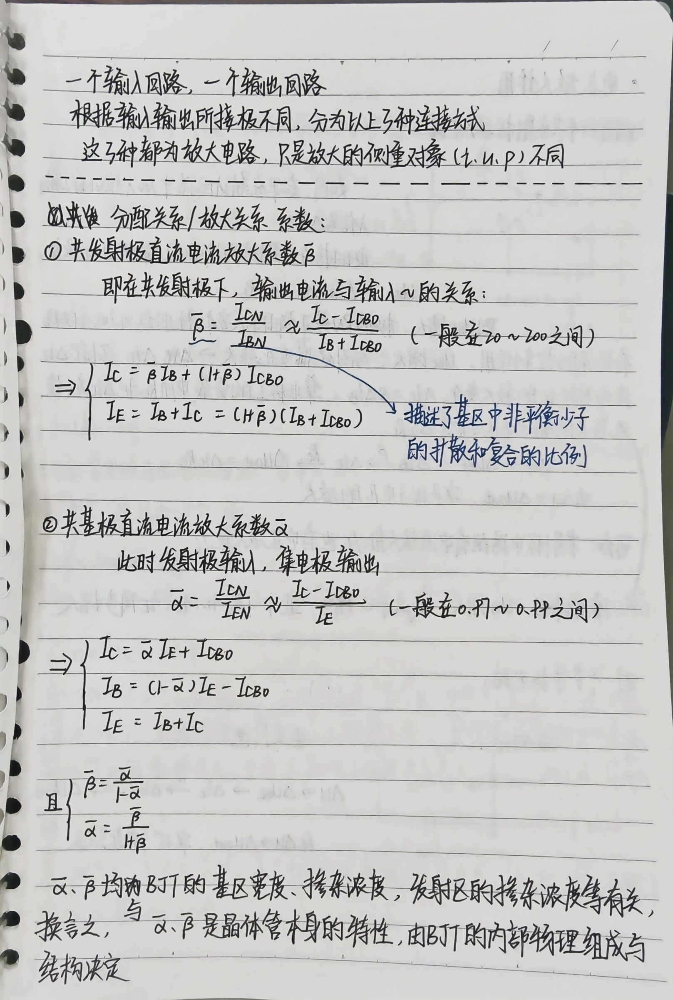
手写部分1 / 8.jpg
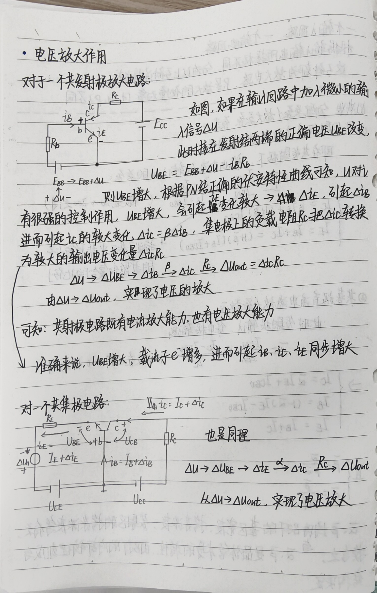
手写部分1 / 9.jpg
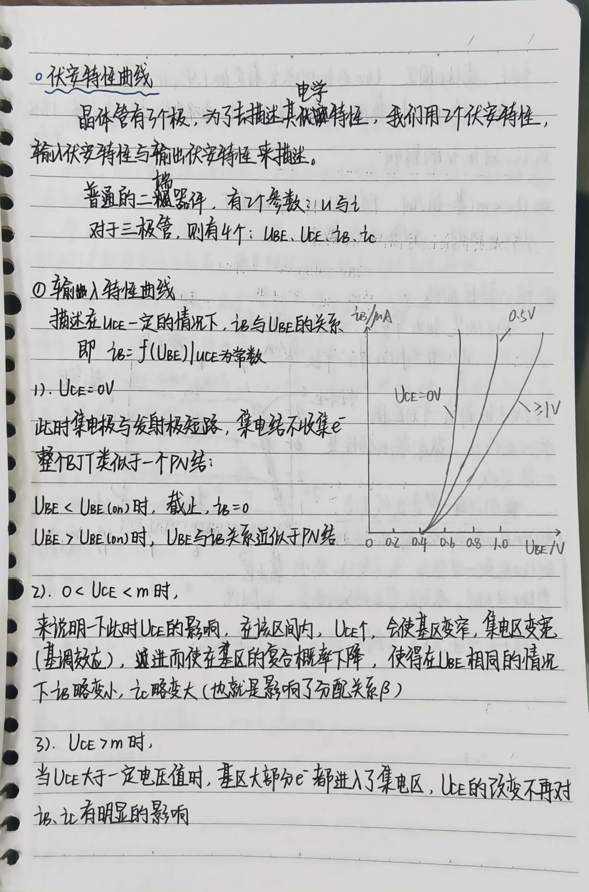
手写部分1 / 10.jpg

手写部分1 / 11.jpg
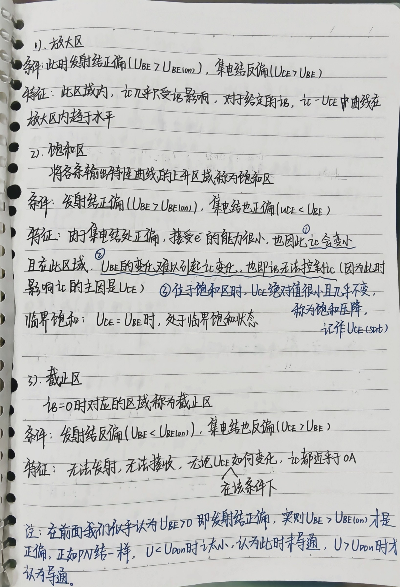
手写部分1 / 12.jpg

手写部分1 / 13.jpg
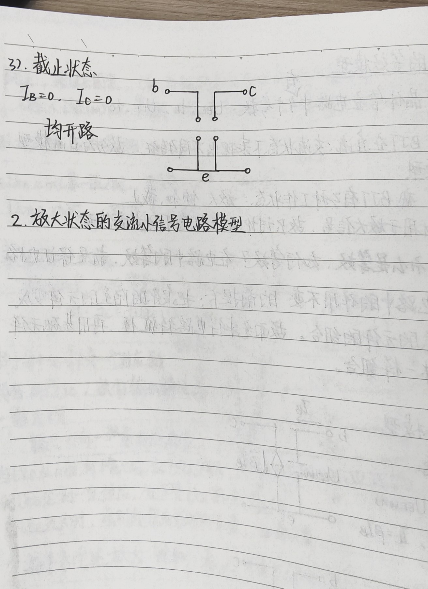
手写部分2 / 1.jpg

手写部分2 / 2.jpg

手写部分2 / 3.jpg
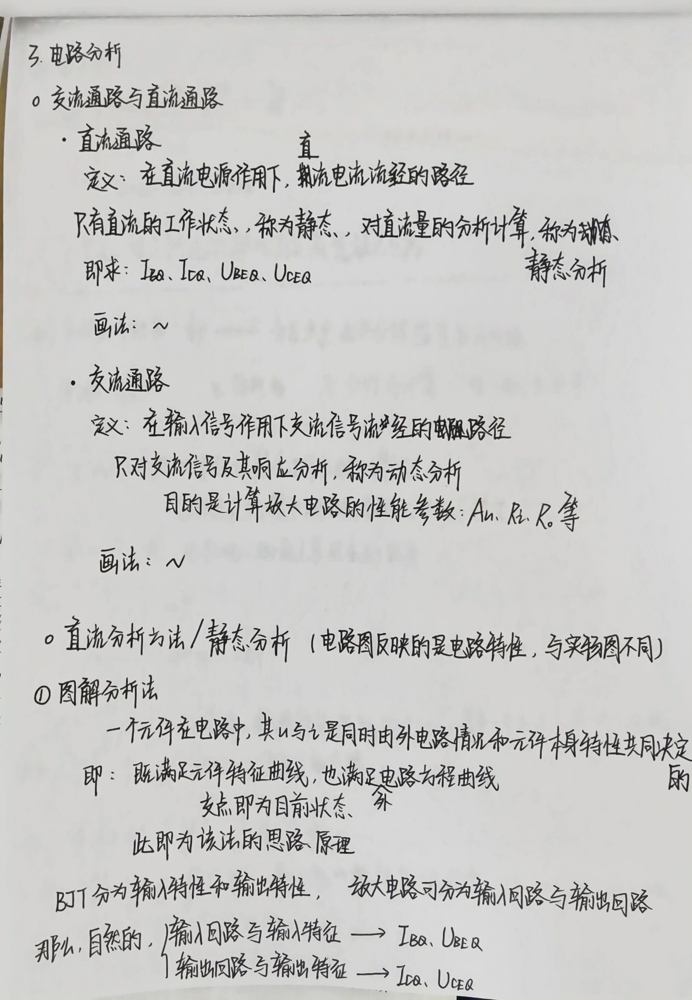
手写部分2 / 4.jpg

手写部分2 / 5.jpg
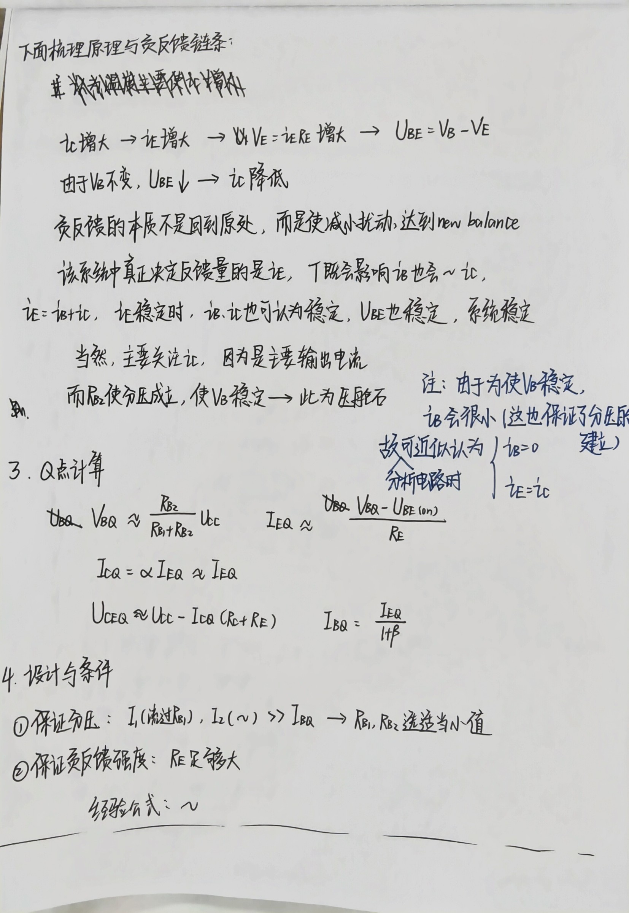